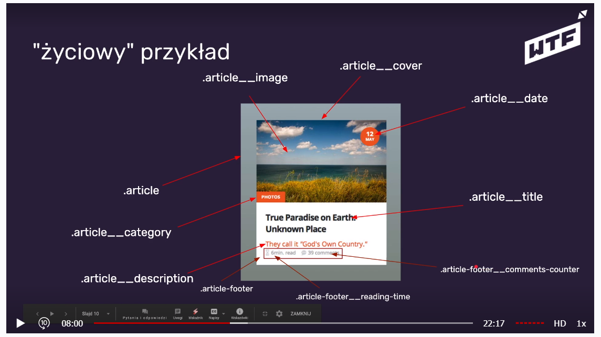

1. GIT
GIT - jest to system kontroli wersji, który został stworzony przez Linusa Torvaldsa- twórcy Linuksa.
1.1. Po co jest potrzebny GIT?
- projekt grupowy - widzimy nawzajem zmiany
- kontrola nad wersją projektu
- mozliwość rozbudowy różnych wersji projektu
- przegląd zmian i wracanie do nich
- działa lokalnie
- do działania zdalnego potrzebuje serwera np. Github
1.2. Konfiguracja GIT-a
- git --version - sprawdzanie wersji gita
- git config --global user.name/"FirstName SurName"/
- git config --global user.email/email/
- git init - tworzenie repo
1.3. Commitowanie zmian
- git status
- git add . - dodanie plików z danego katalogu
- git commit-m ""- opis zmian
- git push - wysyłanie danych do githuba
1.4. Dodatkowe komendy
- ls -a - pokazywanie wszystkich plików
- commit - stan projektu na daną chwilę i opis tego co zmieniło się od ostatniej wersji
- gitk - pokazuje calą historię komunikatów
- clear - czyści terminal
Git lens - narzędzie do podglądania repo i zmian
git w VS - commitowanie z poziomu VS
2. Display, wymiary i overflow
Internet jest w 2D;), w tej lekcji jest mowa o znacznikach <div>, które często są nadużywane. W ramach ich mozemy stosować poniższe rzeczy.
- display:block; - jest to takie ułożenie że dwa elementy sa ułozone w kolumnie
- display:inline; - jest to takie ułożenie że dwa elementy sa obok siebie i wypełniaja stronę. Jeśli jest jeden element to wtedy box sciupia się do takiej wielkości jaka jest treść
- display:inline-block; - jest to taka właściwość, w ramach której mozemy zastosować wymiary. Elementy ułoża się wtedy w boxie o ustalonych rozmiarach
- width/hight - które spowodują ze elementy są wrażliwe na te wielkości i dopasowują sie do nich.
- min/max width i min/max hight
- overflow
- hidden - przepełniona wartość pozostanie ukryta
- visible - wartość domyślna - treść nie jest obcinana, gdy wychodzi poza pole
- scroll - również nam ukrywa ale możemy podejrzeć text za pomoca suwaka
- auto - jeśli treść wychodzi poza pole to również pojawia nam sie opcja suwaka
- initial - używa widocznej wartości domyślnej
- inherit - (dziedziczenie) ustawia przepełnienie na wartość jego elementu nadrzędnego
3. Jednostki
- px - podstawowa jednostka - piksel, np 1px
- % - procenty, np. 50% danego elementu
- vw - viewport width, czyli jest to procent z całego okna
- vh - viewport height, czyli jest to procent z całego okna
4. Box model (padding, border, margin)
jest to niewidzialny prostokąt którym są otoczone wszystkie elementy.

4.1. padding - wewnętrzny margines
- jeśli chcemy zapisać je w jednej lini to musimy wartości wpisać według wskazówek zegara
-jeśli podamy tylko dwie wartości- traktujemy je wtedy jako wartości lustrzane, czyli dla top i bottom będzie taka sama wartość i dla left i right będzie taka sama
4.2. border - zewnętrzny margines- obramowanie
- width - określamy grubość
- style - jaki rodzaj chcemy używać -solid/dotted/dash/double/groove/ridge/inset/outset
- color - kolor
- radius - zaokrąglenie
margin - odległośc od innych elementów, zapisujemy jak w paddingu
- auto - wartość która jest różna w zależności jaki jest display.
- block- elementy ułożą się na środku body, w równych odstępach, ale musi mieć ustaloną szerokość, zeby wiadomo było do czego ma centrować.
- inline- nic nam nie
da przyjęcie wartości auto
5. Box-sizing
Domyślną wartością naszego box-sizing jest content-box, według ktorej rozumiemy, że jeśli ustalimy sobie width na elemencie to wtedy nie ma to wpływu na padding i margin.
Aby móc brac pod uwagę całą szerokośc naszego elementu (wraz z paddingiem, borderem i marginem, ale bez zmieniania właściwoścci dla wszystkiego
6. Position
- static
- relative
- absolute
- fixed - przyklejony do strony, np nagłówek
- sticky - przykleja sie do ekranu, ale dopiero w momencie gdy dotyka końca ekranu
7. Float
Nie powinniśmy używać tego to centrowania, wyrownywania, np. jeśli użyjemy float:left, zbliza nam nasz element najbliżej lewej strony jak to tylko możliwe.
8. JS:Typy danych i immutability
Zmienna to nie wartość, ona jedynie wskazuje nam na jakieś wartości, które przyjmujemy. W każdym języku programowania sa zmienne, w JS nazywamy je camelCasem. Zmienne są jak młody pelikan- łykną wszystko.
8.1.Zmienne w JS
- let - zmienne, których połączenie możemy przypinać, ale ich nie definiujemy, wprowadzamy je tylko raz
let isHappy = false;
isHappy = tak;
isHappy = true;
- const - zmienne mające stale połączenie z jedną wartością
const name = 'Mariola';
const age = 28;
przykład gniazdka i ładowarki
8.2. Typy proste w JS = primitive values
- string - 'tekstowy'
- number - liczbowy
- bigint - liczba powyżej 2 do 53
- boolen - wartości logiczne true/false
- null - wartośc celowo niezdefiniowana
- undefined - brak definicji
- symbol - tworzy unikalne opakowanie
Sprawdzanie jakiego typu jest zmienna- typeof nazwa zmiennej. Ważne jest to że nie możemy zmieniać wartości primitive values w JS. To co zmieniamy to połączenie między nimi a zmiennymi.=Immutability=niezmienność
9. BEM = Block Element Modifier
Powstał przy pracy nad wysszukiwarką w Rosji, polega na spejalnym ukladzie nazw klas.
9.1 Dlaczego powstał?
- problem z logicznym nazywaniem klas
- brak ujednoliconego sposobu stylowania
- importanty, nadpisywanie rzeczy
- brak narzędzia odwzorowania struktur html w css
- stylowanie kilkoma klasami, powtarzające się nazwy
9.2. Z czego się składa BEM
- Block - nadrzędny element
- Element - część bloku (nie musi być bezpośrednim dzieckiem)
- Modifier - modyfikator - jeśli element występuje w kilku wariacjach tworzymy dodatkową klasę
9.3. Sposób zapisu
block__element--modifier, aby lepiej to wyjaśnić poniżej przykład ze zdjęciem

a także zobrazowanie jak to działa w htmlu

a tutaj jako to wygląda w css

9.4. Co warto zapamiętać?
- szukamy elementów na stronei i dzielimy ją na bloki
- myślimy o elementach składowych- plan strony i jej analiza-selekcja
- tworzymy dwie klasy jeśli element ma modyfikator (w modyfikatorze zmieniamy tylko unikalne dla niego wartości, nie przepisujemy rzeczy z klasy bazowej!!!)
10. DOMowe przedszkole
DOM- to Document Object Model, kóry możemuy podejrzeć z DevTolsach, ale należy pamietać, że to co widzimy w VS to nie jest DOM, bo to jest jedynie instrukcja jak ma być zbudowana nasza strona, a w DevTolsach jest już gotowy produkt-
normalnie jak IKEA;)
To co to jest ten DOM?
- Dom to HTML w DevTolsach
- JS♥DOM i moze go modyfikować np za pomocą documnent.querySelector('.selector tak jak w css')
- funkcja querySelector zwraca node(węzeł) z HTML-a
- korzystając z BEMa tworzymy dla JS dodatkową klasę